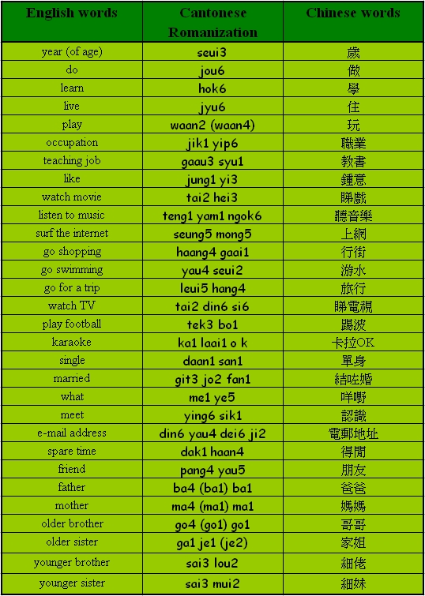

Unit 3 Introducing Oneself
Unit 3 Introducing Oneself 
Objectives
- To recognize and pronounce Cantonese words with the initials [b], [d], [m], [t], [y];
- To recognize and pronounce Cantonese words with the finals [e], [ei], [eui], [o], [ok];
- To use simple Cantonese vocabulary and expressions in introducing oneself.
Warm up Work together.
- Can you say ‘nei5 hou2 ma1?’ to classmates?
Vocabulary Read the words in Cantonese together.

Sentence Structure
Choice – type questions
S Verb [m4] (not) Verb [ga3]? or S Adj [m4] (not )Adj [ga3]?
Are you going to library?
(You go not go to library?)
你去唔去圖書館？
[nei5 heui3 m4 heui3 tou4 syu1 gun2?]
Is she beautiful?
(She beautiful not beautiful ga3?)
佢靚唔靚㗎?
[keui5 leng3 m4 leng3 ga3?]
Do you live alone?
你喺唔喺自己住㗎?
[nei5 hai6 m4 hai6 ji6 gei2 jyu6 ga3?]
Do you like singing?
你鍾唔鍾意唱歌呀？
[nei5 jung1 m4 jung1 yi3 cheung3 go1 a3?]
Are you a teacher?
你係唔係老師嚟㗎？
[nei5 hai6 m4 hai6 lou5 si1 lei4 ga3?]
Conversation Practice with a partner.
Scene: Sally is introducing herself to Linda.
Linda: Sally, What do you like to do in spare time?
Sally, 你得閒鍾意做咩㗎？
[Sally, nei5 dak1 haan4 jung1 yi3 jou6 me1 ga3?]
Sally: I like to go shopping and sing karaoke.
我鍾意行街同埋唱卡拉OK。
[ngo5 jung1 yi3 haang4 gaai1 tung4 maai4 cheung3 ka1 laai1 o k.]
Linda: I like to go swimming and watch film.
我鍾意游水同埋睇戲。
[ngo5 jung1 yi3 yau4 seui2 tung4 maai4 tai2 hei3.]
Sally: Do you live alone?
你喺咪自己住㗎？
[nei5 hai6 mai6 ji6 gei2 jyu6 ga3?]
Linda: No, I live with my dad, mum, elder brother and younger sister.
唔係，我同爸爸、媽媽、哥哥同細妹一齊住。
[m4 hai6, ngo5 tung4 ba4 ba1, ma4 ma1, go4 go1 tung4 sai3 mui2 yat1 chai4 jyu6.]
Sally: I also have five family members at home.
我屋企都係有五個人㗎。
[ou3! ngo5 uk1 kei2 dou1 hai6 yau5 ng5 go3 yan4 ga3.]
Discussion Ask your partner(s) these questions. Ask follow-up questions!
- Can you tell your partner about your hobby or the things that you like to do in spare time?
- How many family members do you have? Who are they? Can you tell your partner?